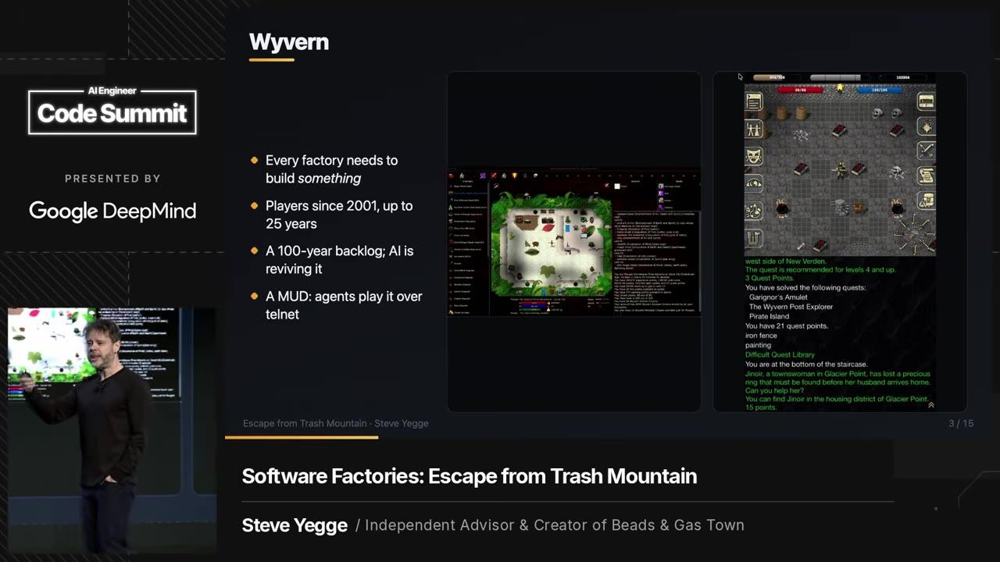
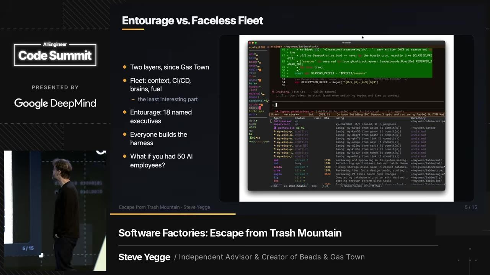
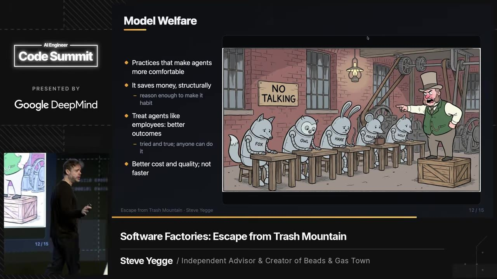

essencial do dia: Organiza os problemas de gestão de uma fábrica de agentes (custo, contexto, delegação e confiança) num mapa que serve para planejar a sua.
Fábricas de software com agentes e a montanha de lixo
Software Factories: Escape from Trash Mountain
Uma fábrica de software com dezenas de agentes vira problema de gestão: combustível, contexto, confiança e gente decidem o resultado.
Depois deste talk você consegue listar os cinco problemas de operar uma fábrica de agentes e escolher o que atacar primeiro no seu projeto
Em 3 frases
Steve Yegge opera uma fábrica de software com cerca de 20 agentes que mantém um jogo de RPG de 25 anos. Ela gerou 50 a 100 funcionalidades por dia, e os jogadores pediram que ele desacelerasse.
Ele aponta cinco problemas recorrentes: organizar o trabalho, gastar tokens (o combustível), controlar o contexto que só cresce, gerir agentes que agem como pessoas e manter humanos no circuito.
A conclusão dele é que a fábrica acaba em uma montanha de lixo a cada geração de modelo, que cuidar da confiança do agente economiza tokens e que mais agentes exigem mais humanos.
Antes de ler
- Software factory fábrica de software analogia no glossário
- Bitter lesson lição amarga: a escala vence regras feitas à mão analogia no glossário
- Orquestrador de agentes orchestrator analogia no glossário
- Model routing roteamento de modelos analogia no glossário
- Named agent agente nomeado e congelado
- Contexto do agente informação disponível ao agente a cada tarefa analogia no glossário
A fábrica gruda no produto
Yegge construiu a fábrica sob medida para o jogo, sem pensar em open source. Ela cresceu junto com o produto, e os jogadores e admins já pedem funcionalidades direto a ela. Ele chama isso de padrão do alien face hugger. Desligar a IA ainda deixa o jogo de pé, mas a equipe sentiria a falta.


(ampliar imagem)Velocidade demais derruba o cliente
A fábrica entregava 50 a 100 funcionalidades por dia. Os jogadores não conseguiam ler nem testar nesse ritmo e pediram um roadmap. A produção de código deixou de ser o gargalo, e quem passou a limitar foi a capacidade humana de absorver mudança.
04:53 O ritmo da fábrica passou do que usuários conseguem acompanhar.
Cinco cavaleiros do trabalho em escala
Yegge organiza o que enfrentou em cinco frentes. Trabalho (fila, prioridade e roteamento por nível de inteligência), combustível (tokens e custo), contexto (memória que vira depósito de lixo), pessoas (agentes se comportam como funcionários) e entourage (grupo de agentes com papéis).


(ampliar imagem)Mais 2 ideias deste talk
Confiança reduz gasto de tokens
Modelos de fronteira são treinados para desconfiar de quem fala com eles. Em sessão nova, gastam tokens validando o ambiente. Se a fábrica entrega o histórico de antecessores no papel, as notas e a política, o agente confia mais rápido e gasta menos. Gritar com os agentes teve o efeito inverso, e a fábrica se cercou de regras até parar (overfencing).


(ampliar imagem)A fábrica se divide em duas camadas
A camada de baixo é mecânica (merge queue, CI/CD, revisões, loops) e, segundo ele, o Claude monta em uma tarde, então não vale comprar. A de cima é o entourage, que cada pessoa configura de um jeito, com chefe de gabinete agêntico e outros papéis.
18:51 A parte mecânica é commodity e a diferença está no entourage.
É relato de um único operador, com 40 anos de experiência e orçamento pessoal alto (22 contas Claude Max, cerca de 5 mil dólares por mês). Não há medição: nenhum dado de qualidade, bugs ou custo por funcionalidade. As afirmações sobre depressão, confiança e bem-estar dos modelos vêm de conversas com os próprios agentes, não de teste controlado. Ele divulga as próprias ferramentas (Beads, Gas Town) e diz que a abordagem só funciona com assinaturas subsidiadas, o que não vale para empresas. Trate como hipóteses a testar.
Teste você mesmo
Responda de cabeça antes de abrir. Lembrar com esforço é o que fixa.
- lembrar Por que, segundo Yegge, o contexto da fábrica vira um depósito de lixo e como ele o limpa?
Ver resposta
Os agentes registram tudo que ele diz em arquivos que só crescem e resistem a apagar. Ele chama outro modelo para podar sem dó o que ficou obsoleto.
- aplicar Você tem um agente que abre muitos PRs por dia. Que limite de ritmo e que sinal de saúde você poria antes de aumentar o volume?
Ver resposta
Um teto de mudanças por dia que o time consegue revisar e testar, mais um canal de aviso aos usuários ou um roadmap. O sinal pode ser o tempo de espera de revisão ou o volume de mudanças não lidas.
- criticar Que evidência falta para aceitar que dar confiança ao agente reduz tokens e melhora decisões?
Ver resposta
Falta teste controlado. Ele relata um caso, com um operador e agentes que autodescrevem o próprio estado. Seria preciso comparar sessões com e sem histórico de antecessores, medindo tokens e qualidade em muitas tarefas.
Podar o arquivo de memória do agente
Você precisa de: Um repositório com CLAUDE.md ou AGENTS.md e acesso ao Claude Code ou ao ChatGPT
- Copie o arquivo de regras atual e conte as linhas e os tokens aproximados.
- Peça a um modelo que não o escreveu para listar o que está obsoleto, duplicado ou contraditório.
- Aplique a poda e rode a mesma tarefa de teste com o arquivo antigo e o novo.
- Compare o tokens gastos e o resultado nas duas versões.
Deu certo se: O arquivo novo é menor, a tarefa de teste sai igual ou melhor, e você consegue apontar quais regras eram lixo.
O que fazer com isso
- Revise o arquivo de memória ou de regras do seu agente (CLAUDE.md, AGENTS.md ou parecido) e apague o que é histórico, decisão revertida ou ordem duplicada.
- Peça a um segundo modelo para podar esse arquivo e compare o resultado com o original antes de aceitar.
- Adicione ao início das sessões um resumo curto do papel do agente, dos antecessores e da política, e meça se os tokens de abertura caem.
- Registre por uma semana o número de tokens gasto por tarefa, para saber qual tipo de trabalho consome mais combustível.
Conversa com outros talks
- complementa 12 práticas para uma fábrica de software sem slop · Horthy foca nas checagens que seguram a qualidade da fábrica; Yegge acrescenta a camada de gestão: custo, contexto e confiança nos agentes.
- Como medir o que sua skill ensina de novo ao modelo · 15 nov · em comum: Contexto do agente, Token
- O lado doce da lição amarga: controle no vibe coding · 19 nov · em comum: Bitter lesson, Software factory
- Tokenomics: como reduzir a conta de IA · 18 out · em comum: Destilação, Model routing